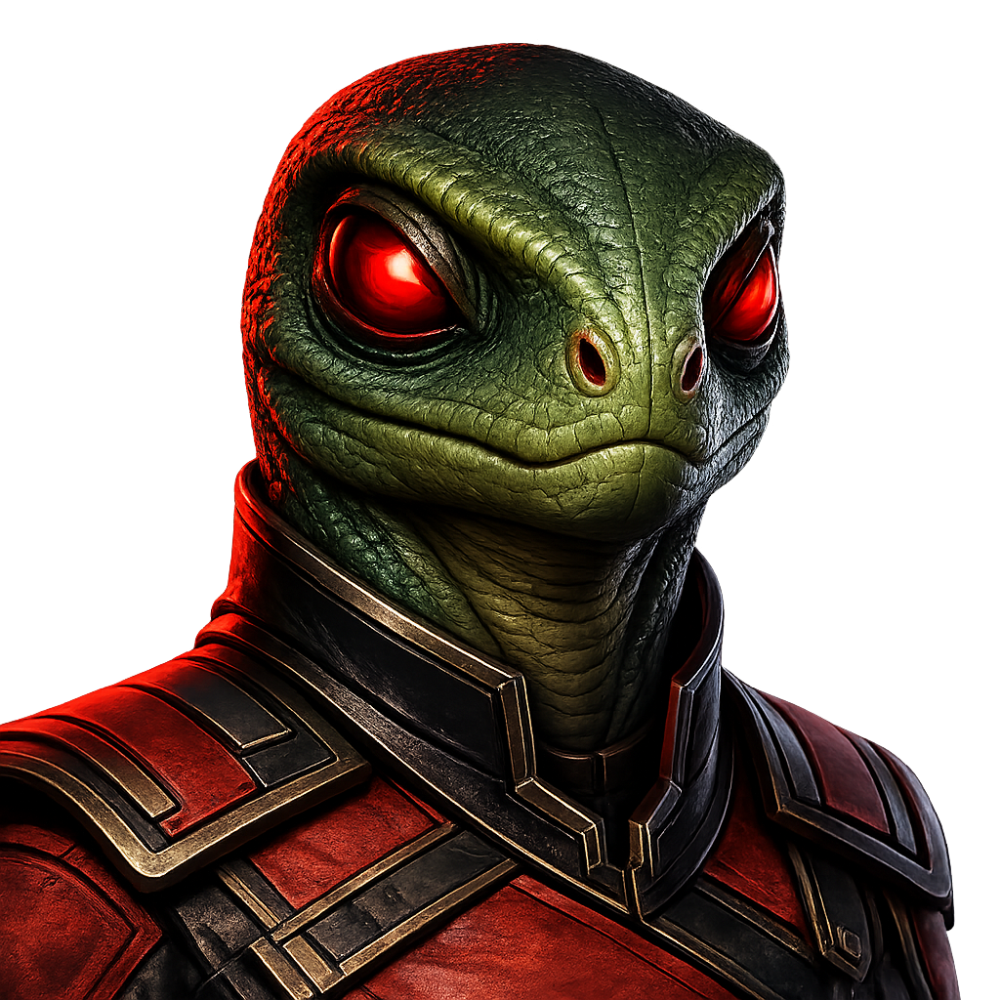

A Windows desktop tool for importing and exporting Stellaris empire designs — share builds, merge designs, and back up your empire file safely.
Current release · v0.1.0 · WindowsEmpirePorter reads Stellaris user_empire_designs_v3.4.txt files, lets you select full empire design blocks, previews the raw output, and writes cleanly formatted import/export files — with automatic backups so you never lose a build.
Export one or more full Stellaris empire designs to a shareable text file.
Import selected empire designs into an existing Stellaris user empire file.
Choose how duplicate empires are handled: skip, replace, or append.
Automatic backups, temporary writes, and parse validation before any file is replaced.
Normalized files with proper CRLF line endings and blank lines between empire blocks.
Zoom controls and a resizable preview split for high-resolution displays.
empire-porter.exe.Default paths:
Export → %USERPROFILE%\Downloads\empire_porter_export.txt
Target → %USERPROFILE%\Documents\Paradox Interactive\Stellaris\user_empire_designs_v3.4.txt
Install Rust, then from the repository root:
cargo build --releaseThe optimized executable is written to target\release\empire-porter.exe.